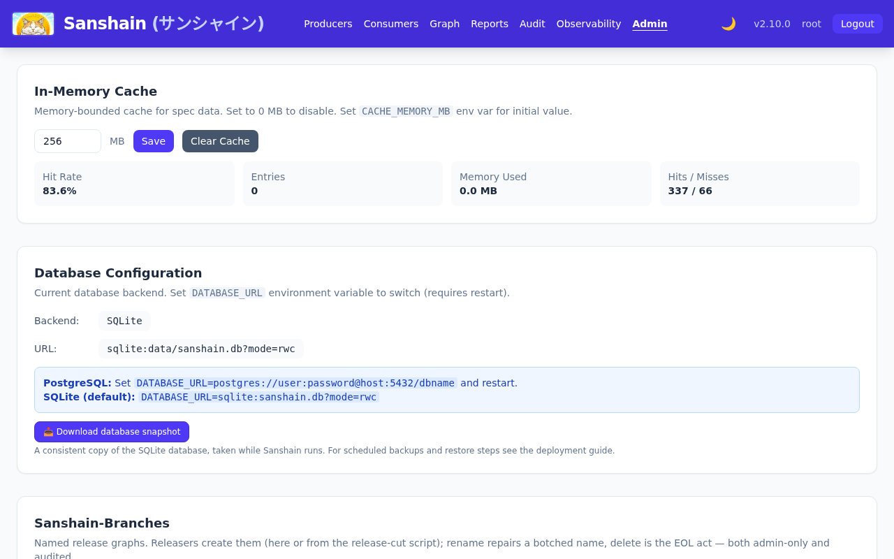
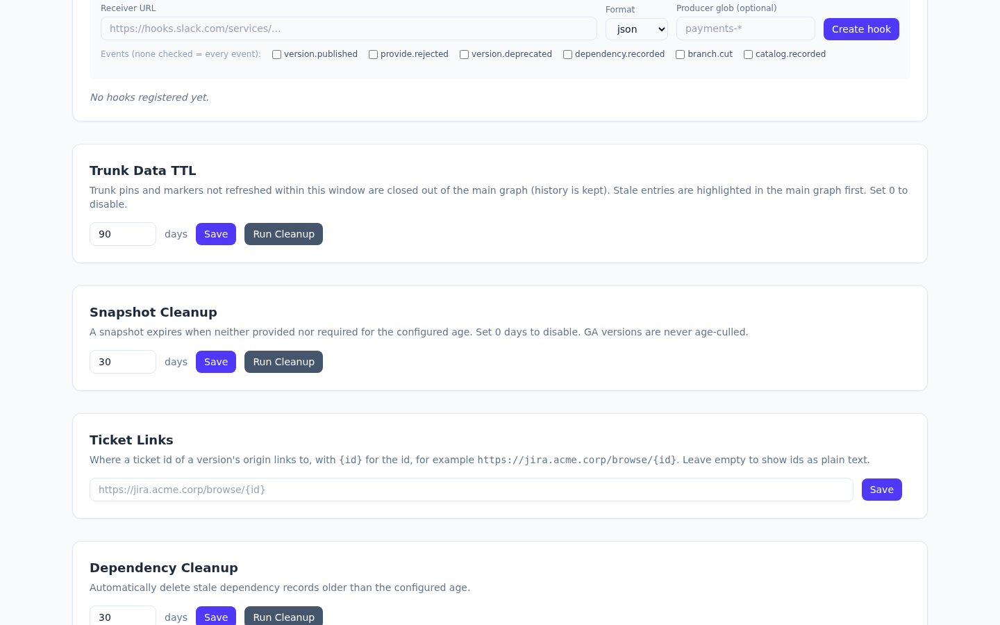

The day-to-day of running an instance: what an administrator sees on /admin.html, the
exceptions that need a hand (deleting a version, a Producer, a branch), what expires on its own
and when, and the resets that wipe things. Users, roles and authentication have their own
chapters.
What changed in 2.6.0
/admin.html has three tabs. Sign-in holds the authentication mode,
the LDAP and OIDC forms, Registration and Auto-acknowledge; Users holds the
users, groups and maintainers; General holds everything else. The open tab is in
the address (/admin.html#users), so it can be linked, and the browser opens the tab it
showed last. A tab whose permissions the caller lacks entirely is greyed out, and its tooltip names
them (manage_auth_config or manage_settings for Sign-in,
manage_users or manage_roles for Users).
/admin.html needs a signed-in session. A control the caller may not use is greyed
out, never hidden, and its tooltip names the permission it needs (a maintainer grant on the
Producer counts for that Producer's buttons); the same holds on the Producer page and the graph.
Settings everybody may know (auto-acknowledge, the cleanup ages, the cache size and the ticket
template) show their real value to everyone signed in, from
GET /admin/instance-settings; the authentication configuration, the webhook
allow-list, the database URL, users, groups and maintainers show "Visible to holders of the …
permission" to whoever lacks it, and the page does not ask for them. Roles and permissions are
described in Roles and permissions, and every route behind it is in the
generated Maintenance API with its guard. General,
top to bottom: In-Memory Cache, Database Configuration, Sanshain-Branches, Webhooks, Trunk Data
TTL, Snapshot Cleanup, Ticket Links, Dependency Cleanup, Provide a Spec for a Producer, Producers,
Consumers, Danger Zone; Sign-in: Authentication; Users: Users, Groups, Maintainers. Administrative routes accept
session tokens only, so a script that administers logs in first (POST /auth/login);
the one exception is the backup download, which takes a full API token.

Everything an administrator changes lands in the audit log with the acting user, see below.
The unit of administration is the version line.
Versions manage themselves for the most part (GA is immutable and never age-culled,
snapshots expire when unused), so administration is
the exceptions. The Producers section lists every Producer that has provided at
least once with its version lines; /producers.html is the richer view for browsing.
| Route | Guard | Effect |
|---|---|---|
GET /admin/producers, GET /admin/producers/{name} |
any signed-in caller | The list, and one Producer with its catalog context. |
GET /admin/producers/{name}/versions |
any signed-in caller | Its version lines, optionally filtered by api_type. |
GET /admin/producers/{name}/versions/{api_type}/{version}/dependents |
any signed-in caller | The Consumers pinned to the version: what a delete would break. |
DELETE /admin/producers/{name}/versions/{api_type}/{version} |
manage_producers, Producer-scoped |
Delete the version; frees the number. Audited as DELETE_VERSION. |
POST /admin/producers/{name}/versions/{api_type}/{version}/promote |
release_ga, checked by the version rules |
Promote a snapshot to GA in place. Audited as VERSION_PROMOTED. |
POST /admin/producers/metadata |
manage_producers |
Icon and domain of a Producer ({"name","icon","domain"}), audited as
UPDATE_SERVICE_METADATA. Owner, description and links come from the catalog
push, not from here.
|
DELETE /admin/producers/{name} |
manage_producers, Producer-scoped |
Delete the Producer with every version line, endpoint and recorded dependency on it. Audited
as DELETE_SERVICE.
|
The sole escape hatch from GA immutability (ADR-0003). Consumers pinned to the deleted version fail with
404 on their next require; the UI shows the dependents and the
sanshain-branches whose recorded graph
references the version before you confirm. Move the Consumers first where you can. A branch's pin
is left visibly dangling rather than dropped, and a later re-provide of the number heals it. The
audit entry names the Consumers that were still pinned.
Refused with 409 while any sanshain-branch's recorded graph references the
participant, because its rows would cascade out of release cuts that already happened:
'orders' is part of the recorded graph of sanshain-branch(es) release-2026-10 — deleting it would remove those edges from release cuts that already happened. Delete the branch(es) first if the record is no longer needed.Trunk presence does not block a delete; trunk is the living stream and ages out on its own TTL. A confirmation dialog precedes every deletion in the UI.
The Consumers section lists every Consumer that has recorded a dependency.
GET /admin/consumers, GET /admin/consumers/{name} and
GET /admin/consumers/{name}/endpoints are readable by any signed-in caller;
DELETE /admin/consumers/{name} (manage_consumers) removes it with its
dependencies, audited as DELETE_CLIENT, with the same 409 as above while
a branch references it.
Release cuts (Release graphs). The Sanshain-Branches section creates, renames and deletes them:
POST /admin/branches, release_ga): a named
copy of the main graph, or of another branch, at a chosen instant; a past
as_of repairs a forgotten cut. main, dev and
trunk are reserved. Emits branch.cut to global webhooks.
PUT /admin/branches/{name},
manage_producers): membership, timeline and audit stamps survive, because all key
on the branch's id. Pipelines still sending the old tag get a
Sanshain-Warning until reconfigured.
DELETE /admin/branches/{name},
manage_producers): the end-of-life act; frees the name.
GET /admin/branches, …/{name}/graph, …/{name}/timeline,
/admin/trunk/graph, /admin/trunk/timeline,
/admin/graph/diff, /admin/graph/scope and /admin/periphery
are the read side the graph page uses, open to any signed-in caller. Audited as
BRANCH_CREATED, BRANCH_RENAMED, BRANCH_DELETED. There are
no "protected branches" in 2.6.0; that older concept was replaced by sanshain-branches.
One background pass every CLEANUP_INTERVAL_SECS (3600) does all of the following;
each ran-now button triggers one step immediately. The ages are settings (Configuration), at most 36500 days.
| Step | Setting, default | What goes | Run now |
|---|---|---|---|
| Snapshot expiry | snapshot_max_age_days, 30; 0 disables |
A snapshot neither provided nor required for
that long (snapshot expiry). A require
keeps it alive; GA never expires. The remaining lifetime is shown on the version line as
expires_at.
|
POST /admin/cleanup/snapshots |
| Dependency cleanup | dependency_max_age_days, 30; must be greater than 0 |
Recorded dependencies a Consumer has stopped refreshing. | POST /admin/cleanup/dependencies |
| Trunk cleanup | trunk_max_age_days, 90; 0 disables |
Trunk pins and markers not refreshed within the window are closed: they leave the main graph but stay as history for the timeline (trunk TTL). The main graph marks entries stale once they pass half the window. | POST /admin/cleanup/trunk |
| Credential cleanup | fixed | Expired sessions and API tokens. Validation refuses them already; this reclaims the rows. | |
| Webhook cleanup | fixed, 30 days | Delivered and dead deliveries older than 30 days. | |
| CSRF tokens | CSRF_MAX_AGE_HOURS, 24 |
Unused CSRF tokens from the in-memory map. |
The settings and the run-now routes need manage_settings. The background pass logs a
line when a step removed something (Snapshot cleanup: deleted 3 unused snapshots);
the run-now routes write SNAPSHOT_CLEANUP, DEPENDENCY_CLEANUP and
TRUNK_CLEANUP audit entries.

http(s) URL
with {id} for the id (https://jira.acme.corp/browse/{id}). The pages
render the ticket ids of a version's origin as links
with it; empty shows them as plain text (GET /admin/ticket-url-template for every
signed-in user, POST /admin/settings/ticket-url-template audited as
SET_TICKET_URL_TEMPLATE).
POST /admin/cache/clear, audited as
CLEAR_CACHE). See The data cache.
password query parameter removed (GET /admin/settings/database), read-only; and on SQLite the snapshot download.
PUT /admin/producers/{name}/external, manage_producers).
Every provide, require, catalog push and administrative action writes an audit entry with the
acting user, the service and version it concerns and, for stream-bound facts, the stream.
/audit.html shows the audit timeline with
filters by date, type, Producer and version (SQL wildcards, auth-%) and stream, and a
diff viewer on provides; it reads GET /api/audit/timeline
(view_audit). The observability page has an audit tab with
Export CSV: GET /admin/observability/audit-logs/export returns the
newest 1000 entries with the header
id,timestamp,username,action,details,service,version,action_type,streamThe action names, grouped:
| Area | Actions |
|---|---|
| Catalog |
PROVIDE_SPEC, VERSION_PROMOTED, VERSION_REJECTED,
REQUIRE_SPEC, REPORT, CATALOG_PUSHED,
RETIRE_PROTOCOL, DELETE_VERSION, DELETE_SERVICE,
DELETE_CLIENT,
UPDATE_SERVICE_METADATA
|
| Branches |
BRANCH_CREATED, BRANCH_RENAMED, BRANCH_DELETED,
BRANCH_MEMBER_TAGGED
|
| Users and roles |
REGISTER_USER, APPROVE_USER, DELETE_USER,
CHANGE_PASSWORD, CREATE_TOKEN, REVOKE_TOKEN,
GRANT_ROLE, REVOKE_ROLE, CREATE_GROUP,
UPDATE_GROUP, DELETE_GROUP, ASSIGN_MAINTAINER,
UNASSIGN_MAINTAINER
|
| Settings and cleanup |
UPDATE_SETTINGS, SETTINGS_CHANGED, SET_AUTO_APPROVE,
SET_SNAPSHOT_MAX_AGE, SET_WEBHOOK_ALLOWED_HOSTS,
CLEAR_CACHE, SNAPSHOT_CLEANUP, DEPENDENCY_CLEANUP,
TRUNK_CLEANUP
|
| Webhooks, backup, resets |
WEBHOOK_CREATED, WEBHOOK_PAUSED, WEBHOOK_RESUMED,
WEBHOOK_DELETED, WEBHOOK_SECRET_ROTATED,
WEBHOOK_REDELIVERED, DATABASE_SNAPSHOT, NUKE_DATABASE
|
The audit log is not a webhook source by design (ADR-0009): a hook for admin events would be a second copy with a weaker access check.
Four resets, all behind run_destructive_operations, each confirmed in the UI by
typing the phrase and on the API by sending it as {"confirmation": "…"}; anything
else answers 400 Invalid confirmation. Every one writes a
NUKE_DATABASE audit entry.
| Route | Confirmation | Removes |
|---|---|---|
POST /admin/nuke/producers |
DELETE ALL SERVICES |
Every Producer with its versions, endpoints and the dependencies on them. |
POST /admin/nuke/consumers |
DELETE ALL CLIENTS |
Every Consumer and its recorded dependencies. |
POST /admin/nuke/users |
DELETE ALL USERS |
Every user who is not an effective administrator: holders of admin, directly or
through a group, and the configured root accounts are spared.
|
POST /admin/nuke/database |
NUKE DATABASE |
Everything; the instance is as after its first start, except for the caller. |
Take a backup first. There is no undo, and the audit entry is the only trace.
Checked against v2.6.0.